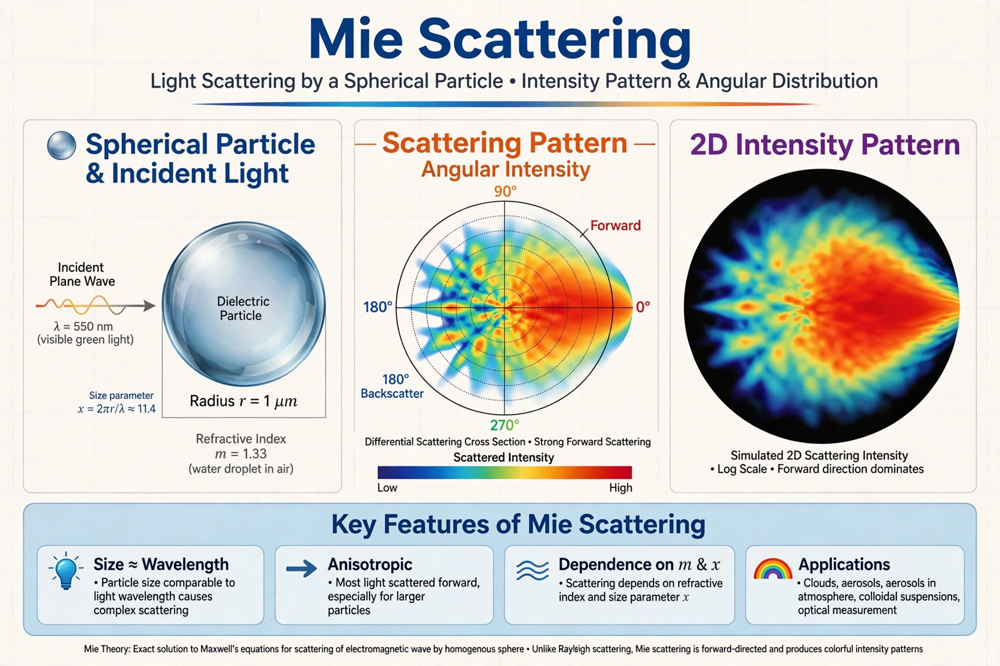

Mie scattering is the elastic scattering of electromagnetic radiation by a sphere whose diameter is comparable to or larger than the wavelength of the incident light. Formulated by German physicist Gustav Mie in 1908, the Mie solution to Maxwell's equations describes scattering by homogeneous spheres of any size and underlies much of atmospheric optics, aerosol science and nanoparticle characterisation.

| Named after | Gustav Mie |
|---|---|
| Published | 1908 |
| Applies to | Spherical particles, size parameter x = 2πr/λ ≳ 0.1 |
Mie expanded the internal and scattered fields in vector spherical harmonics, obtaining infinite series whose coefficients depend on the size parameter and the particle's complex refractive index relative to the medium. The solution yields extinction, scattering and absorption efficiencies (Qext, Qsca, Qabs) and the angular scattering pattern, which becomes strongly forward-peaked as particle size grows.
For particles much smaller than the wavelength, Mie theory reduces to Rayleigh scattering, with intensity proportional to λ−4. For very large particles it approaches geometric optics. Between these limits, resonances produce ripples in efficiency curves used to size particles.
Mie scattering explains the white appearance of clouds and fog (water droplets scatter all visible wavelengths roughly equally), the glare around the sun from aerosols, and is used in weather radar, lidar, medical imaging, pigment and paint design, and plasmonic nanoparticle analysis. Modern codes following Bohren and Huffman compute Mie series efficiently for layered and coated spheres.